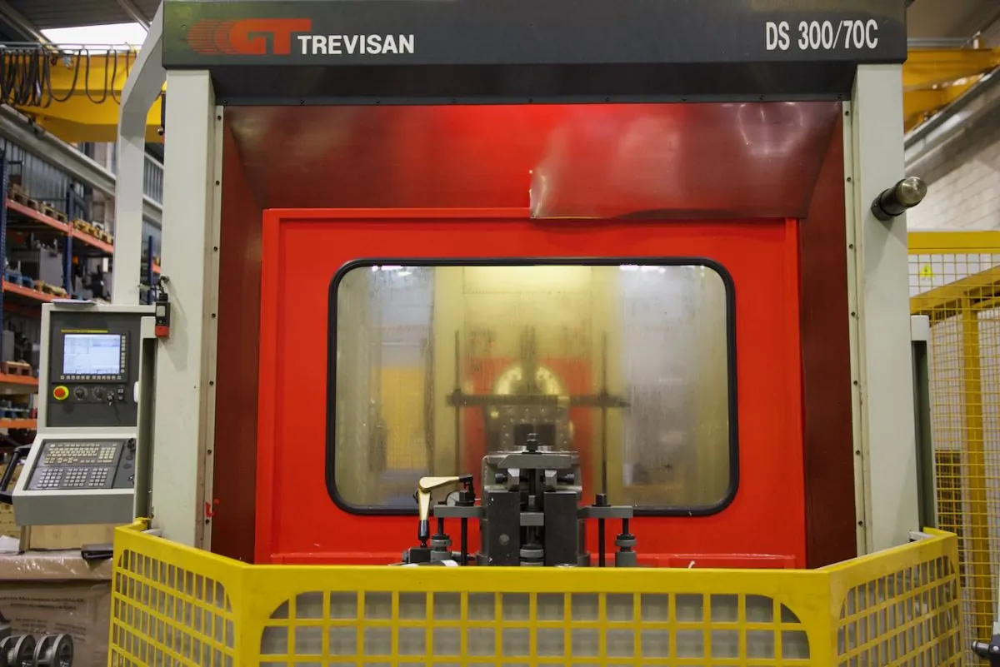
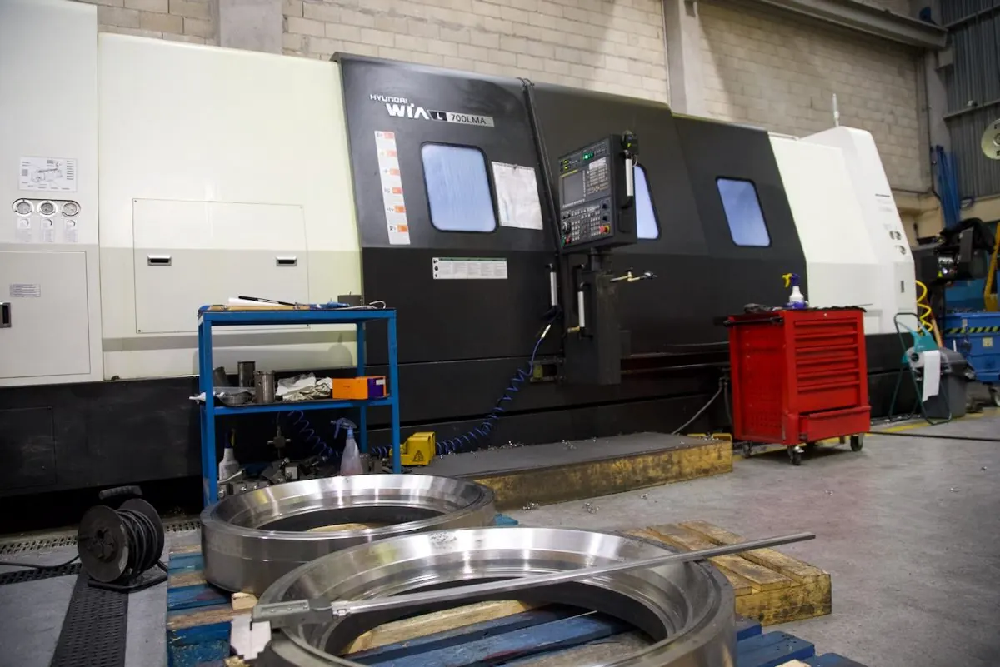
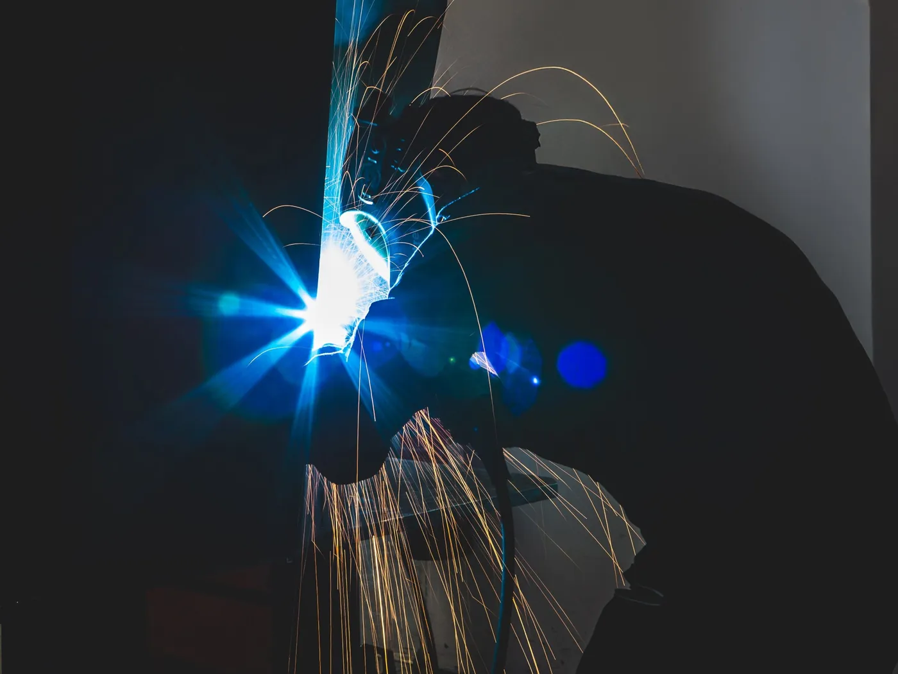

01 — Fresado · 4 máquinas
Fresado
Caras, ranuras, taladros y geometrías complejas en centros de mecanizado, incluido mecanizado en 5 ejes.

Dimensión máx.
Ø 2.000 × 1.500 mm
Trevisan IIPeso máx. de pieza
4.500 kg
Con carga reforzadaTolerancia
± 0,005 mm
Desde, en 5 ejes| Máquina | Tipo | Dimensiones máx. de pieza | Peso máx. | Tolerancia habitual |
|---|---|---|---|---|
| Trevisan II DS-600 RAM | Centro de mecanizado | Ø 2.000 × 1.500 mmØ 900 mm en torneado | 2.600 kg4.500 kg opcional | ± 0,010 mm |
| Trevisan I DS-600 | Centro de mecanizado | Ø 2.000 × 1.100 mmØ 900 mm en torneado | 2.600 kg | ± 0,010 mm |
| Johnford SV-48H | Centro de mecanizado vertical | 1.300 × 700 × 630 mmMesa · recorrido Z | 1.500 kg | ± 0,015 mm |
| Deckel Maho DMC 80 U duoBLOCK | Centro de mecanizado 5 ejes | Ø 900 × 1.450 mmMesa Ø 800 × 630 mm | 1.200 – 1.400 kg | ± 0,005 mm |
[Revisar los valores con rango o «según versión»: en la web conviene un único valor por máquina.]
02 — Torneado · 4 máquinas
Torneado
Piezas de revolución: torneado exterior e interior, refrentado, roscado y torneado esférico de gran volteo.

Volteo máx.
Ø 1.600 mm
Heller TS 1600Longitud máx.
1.966 mm
Takisawa LS-1000 MPeso máx. de pieza
3.000 kg
Doosan Puma 700 [confirmar]| Máquina | Tipo | Dimensiones máx. de pieza | Peso máx. | Tolerancia habitual |
|---|---|---|---|---|
| Heller TS 1600 × 1500 | Torno esférico de gran volteo | Ø 1.600 × 1.500 mmØ 900 mm esférico exterior | 2.500 kg | ± 0,015 mm |
| Doosan Puma 700 | Torno CNC horizontal pesado | Ø 900 × 1.600 mmHasta 3.200 mm en versión L | 2.500 – 3.000 kg | ± 0,008 mm |
| Takisawa LS-1000 M | Torno CNC con herramienta motorizada | Ø 850 × 1.966 mmHasta 2.966 mm en L30 | 2.000 – 2.500 kg | ± 0,008 mm |
| Sprint D600 (Spinner TC 600) | Torno CNC horizontal | Ø 310 – 400 × 650 mmVolteo Ø 600 mm | 400 – 600 kg | ± 0,005 mm |
[Revisar los valores con rango o «según versión»: en la web conviene un único valor por máquina.]
03 — Mandrinado · 1 máquina
Mandrinado
Alojamientos y diámetros interiores de precisión en piezas de gran tamaño.

Peso máx. de pieza
12.000 kg
Mesa giratoria
2.500 × 1.800 mm
Giro de mesa
360°
TOS Varnsdorf WHN 13 CNC
Mandrinadora horizontal de columna móvil| Eje X · longitudinal | 3.500 – 4.200 mm |
|---|---|
| Eje Y · vertical del cabezal | 2.000 – 2.500 mm |
| Eje Z · carnero | 800 – 1.250 mm |
| Eje W · husillo de mandrinar | 800 mm |
| Dimensiones de mesa | 1.800 × 1.800 – 2.500 × 1.800 mm |
| Peso máximo sobre mesa | 12.000 kg |
| Giro de mesa | 360°, indexado o continuo |
[Confirmar los valores exactos de la versión instalada: los rangos corresponden al modelo.]
04 — Soldadura · certificada
Soldadura
Soldadura de piezas de acero fundido con soldadores y procedimientos certificados.

Datos de soldadura
Certificados disponibles bajo petición| Procesos | [p. ej. TIG (141) · electrodo (111)] |
|---|---|
| Materiales | Aceros al carbono, inoxidables, dúplex y superdúplex |
| Certificación de soldadores | [p. ej. EN ISO 9606-1] |
| Procedimientos cualificados | [p. ej. WPQR según EN ISO 15614-1 / ASME IX] |
[Confirmar procesos y normas de certificación con Calidad.]
¿Tiene un plano o una especificación?
Envíenos la documentación y le responderemos con la viabilidad técnica y el plazo.